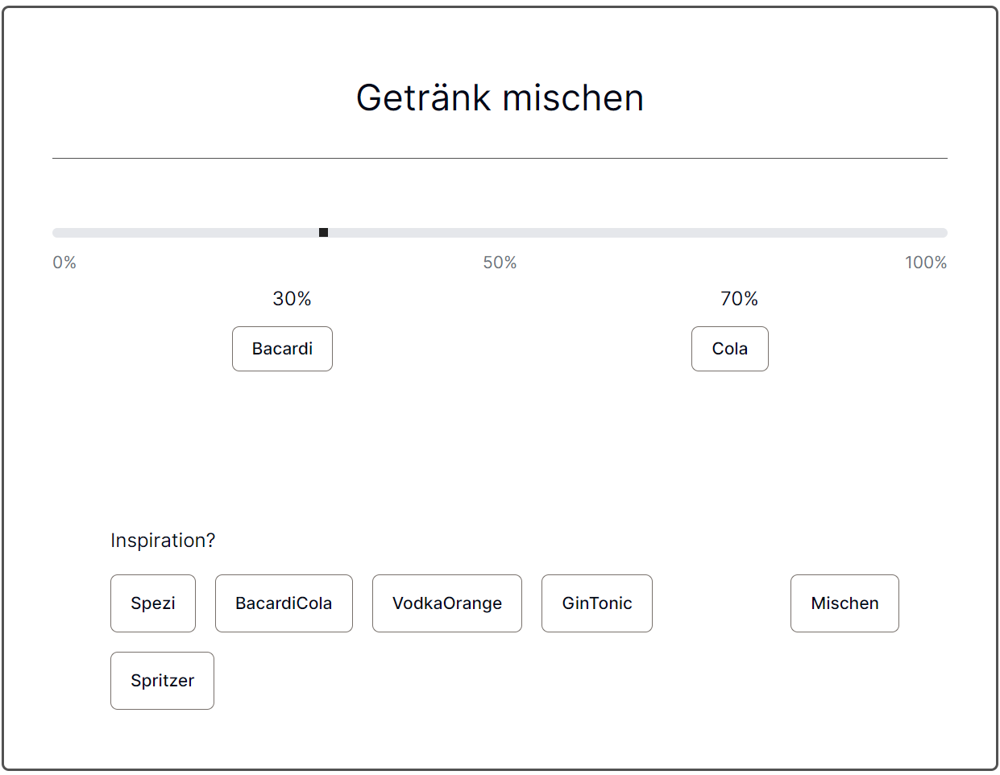
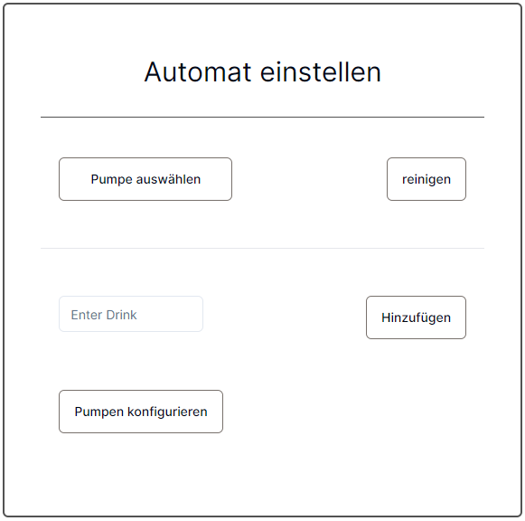
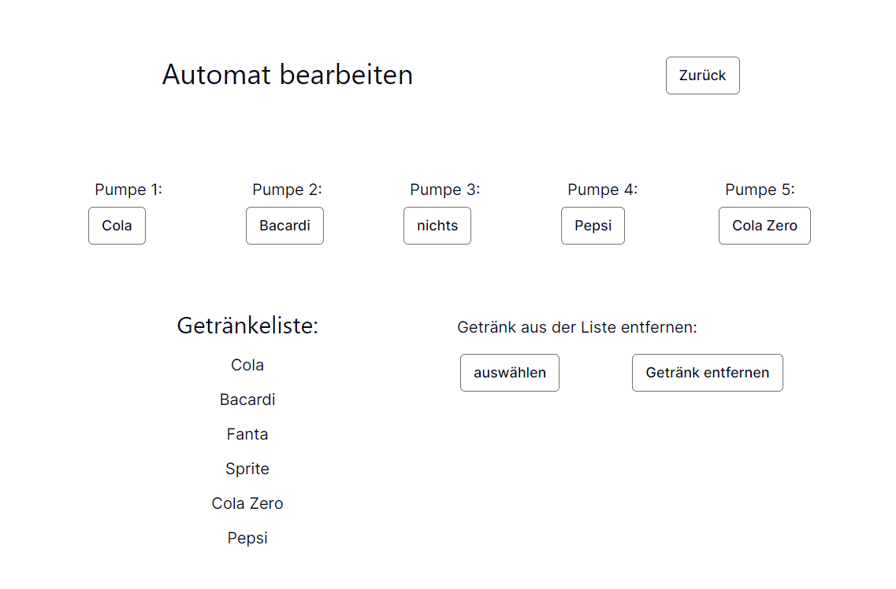

Diplomarbeit · HTL Pinkafeld
Getränkeportionierer
Eine Weboberfläche, die Getränkeauswahl und Mischverhältnis mit der Steuerung eines Automaten verbindet.
Vom Browser zum Getränk
Im Rahmen meiner Diplomarbeit an der HTL Pinkafeld entstand ein Getränkeportionierer mit fünf Pumpen. Über die Weboberfläche lassen sich zwei Getränke auswählen, ihr Mischverhältnis einstellen und der Mischvorgang starten. Voreinstellungen erleichtern die Auswahl beliebter Kombinationen.
Software trifft Elektronik
Die Website und die MongoDB-Datenbank laufen auf einem Raspberry Pi im lokalen Netzwerk. Die Weboberfläche übermittelt den Mischauftrag über eine API an den Server. Ein Python-Programm gibt die Parameter über die serielle Schnittstelle an den Arduino weiter.
Einblicke in die Bedienung.
Originalabbildungen aus der Dokumentation meiner Diplomarbeit. Per Klick lassen sich die Bilder in voller Größe öffnen.

Getränke und Mischverhältnis auswählen
Ein Schieberegler legt das Verhältnis in Fünf-Prozent-Schritten fest. Die Auswahl bietet nur Getränke an, die einer Pumpe zugeordnet sind. Vor dem Start prüft die Anwendung die Eingaben.

Den Automaten verwalten
Die Einstellungen ermöglichen das Reinigen einer ausgewählten Pumpe und das Ergänzen neuer Getränke. Eine Prüfung verhindert doppelte Einträge in der Datenbank.

Flaschen den Pumpen zuordnen
Für jede der fünf Pumpen lässt sich das angeschlossene Getränk einstellen. MongoDB speichert die Zuordnung dauerhaft. Nicht mehr benötigte Getränke können aus der Liste entfernt werden.
Status und Abbruch
Während des Mischens fragt die Oberfläche den Fortschritt im Sekundentakt beim Server ab. Ein laufender Mischvorgang kann abgebrochen werden; weitere Mischaufträge werden währenddessen abgewiesen.
Bedienung im lokalen Netzwerk
Die Oberfläche passt sich an Smartphone und Computer an. Website und Datenbank starten automatisch mit dem Raspberry Pi. Die Bedienung erfolgt im selben Netzwerk wie der Automat.
Das Projekt auf GitHub
Das zugehörige Repository zur Website des Getränkeportionierers.